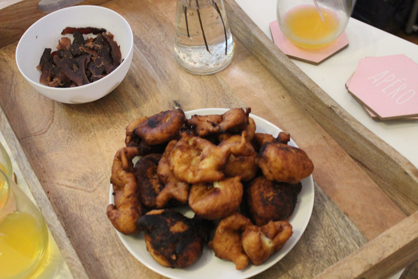

The attendees were given the materials and were open to work with them to create their own pieces.


Adding to the experience, I provided the attendees with two popular snacks. The first was biltong, which is a dried beef snack. The attendees also enjoyed vitumbuwa, fritters, that I made myself following my grandmother's recipe. Both snacks were devoured by the end of the workshop!

In addition to giving the participants background on the material being used, I also gave two examples of contemporary designers from the region that embrace and work with the fabric. The Bombchel Factory, is a line founded by Archel Bernard in Monrovia, Liberia. I had the opportunity to speak with Archel Bernard at an artist talk in Washington, DC. I was drawn to the strong social mission behind the Bombchel Factory and the opportunities she is creating for the women in her community. The company provided a wonderful example of the success coming out of independent businesses and artists that fully embrace the resources available in the region. By employing women that have overcome difficult circumstances as a result of health, political, and economic troubles in the country, Archel has created a company that appeals to the cool girls of Monrovia and changes lives along the way.
The second example, fashion line Popoka by Lupupa Kabezya-Lewis, is based in Lusaka, Zambian. Known for their simple elegance, the line blends the traditional and modern to create pieces for confident curvier women.
The Bombchel Factory website | Popoka on Facebook